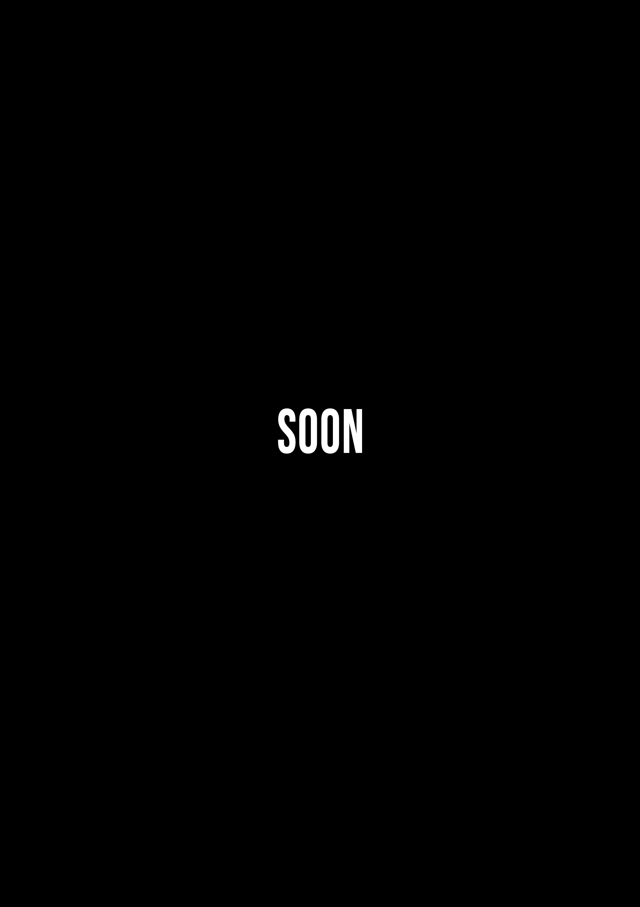
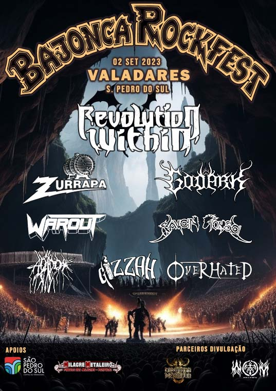
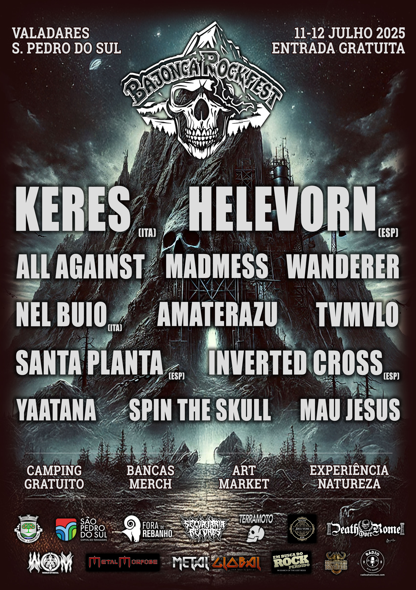
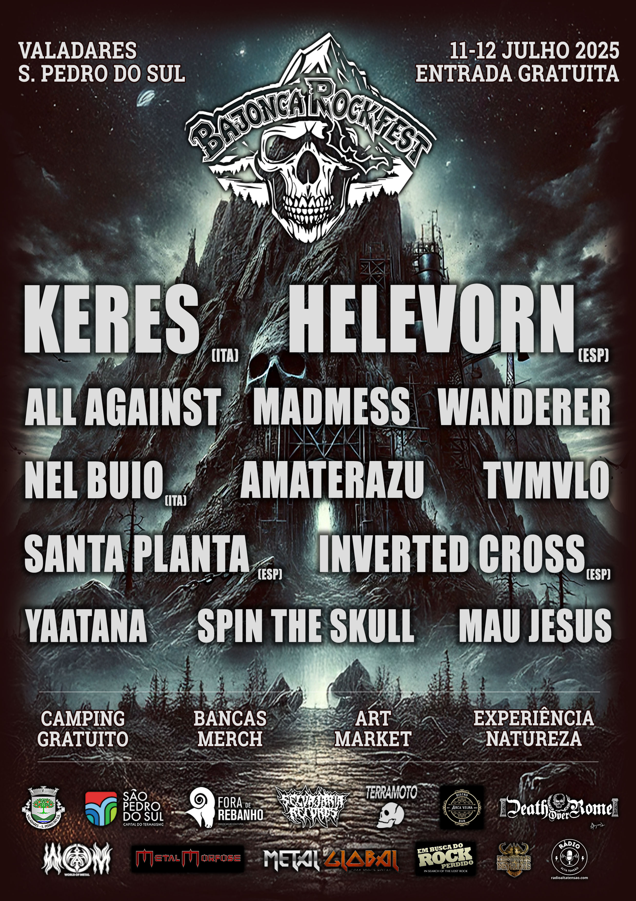

CARTEL
UNDEAD
Death Metal - España


En estreno absoluto en Portugal, Undead es uno de los mayores nombres del Death Metal español. Death metal visceral y brutal, con una producción moderna y agresiva, Undead aporta una energía única a sus conciertos.
WET CACTUS
Stoner Rock - España
Los legendarios Wet Cactus son uno de los mayores exponentes del Stoner Rock español. Con riffs pesados y grooves cautivadores, Wet Cactus aporta una energía masiva al escenario del Bajonca. Influencias que van desde el rock psicodélico de los años 70 hasta el stoner moderno, concierto intenso y envolvente.
FOSCOR
Post Black Metal - España
De regreso a Portugal, la histórica banda de black metal española viene a celebrar el 25º aniversario de su primer lanzamiento con un set muy especial que promete ser un viaje intenso por sus primeros lanzamientos. Con un sonido que mezcla la agresividad del black metal con atmósferas melancólicas y progresivas, este concierto será histórico.
SPEEDEMON
Heavy/Speed/Thrash - Portugal
Speedemon no necesita presentación en Portugal. La banda, que ya representó al país en el Wacken, trae consigo el aclamado Fall Of Man. Con un sonido que mezcla elementos de heavy, speed y thrash metal, Speedemon es una banda que promete un concierto lleno de energía y actitud. Con riffs rápidos y potentes, solos de guitarra electrizantes y una actuación enérgica, Speedemon hará vibrar al público de principio a fin del concierto.
BESTA
Grindcore - Portugal
Reducir a Besta a la etiqueta de Grindcore es, en realidad, una tremenda injusticia a lo que la banda produce en el escenario. Con un sonido que mezcla elementos de grindcore, death metal y hardcore, la banda es una BESTIA en el escenario con riffs rápidos y potentes, voces agresivas y una actuación energética. Besta hará vibrar al público de principio a fin del concierto.
LÓSTREGOS
Pagan Black Metal - España
Los gallegos Lóstregos son una joya del black metal pagano español e internacional, con sonoridades que van desde el Black Metal seminal hasta el melódico e incluso el atmosférico. El concierto de la banda es un viaje intenso y envolvente por paisajes sonoros que evocan la naturaleza, la mitología y la historia de Galicia. Con una presencia escénica cautivadora y un sonido único, el concierto de la banda será una experiencia inolvidable para los amantes del género y para todos aquellos que aprecian la música intensa y emocional.
CRUZEIRO
Stoner/Doom - España
Los gallegos Cruzeiro son una de las mayores revelaciones del stoner doom español de los últimos años. Con un sonido que mezcla riffs pesados y atmósferas densas, Cruzeiro aporta una energía única al escenario del Bajonca. Con influencias que van desde el doom clásico hasta el stoner moderno, Cruzeiro es una banda que ofrece un concierto intenso y envolvente.
MURMUR
Post Black/Doom/Death - España
¡Por primera vez en Portugal! Murmur es la nueva gran revelación del post black/doom/death español. De degustación densa y atmosférica, la mezcla de black, doom y death genera una experiencia escalofriante y corrosiva. La melancolía y la brutalidad coexisten de forma magistral, creando un concierto que promete ser un viaje intenso y emocional por paisajes sonoros oscuros y envolventes.
JARDA
Thrash N' Roll - Portugal
¡JARDA NATION!!! Thrash n' roll para volar la cabeza, velocidad suprema y riffs que no dan tregua. Gran dosis de energía y actitud, Jarda promete adrenalina y diversión de principio a fin del concierto, con una actuación que hará vibrar al público y cantar al unísono. ¡Máxima locura de vaqueros!
RAGEFUL
Death Metal - Portugal
¡Cuando Rageful sube al escenario, la sangre del público hierve! Con una mezcla de Death Metal Old School y Death Metal moderno, Rageful aporta una energía brutal y una técnica impresionante que no dejará indiferentes a los fans del metal. Con riffs pesados, voces agresivas y una presencia escénica intensa, Rageful promete hacer estallar el escenario del Bajonca.
EL SAGUARO
Stoner/Blues Rock - Portugal
El rock psicodélico y stoner de El Saguaro es un viaje agradable por los paisajes sonoros del desierto, con riffs pesados y grooves hipnóticos que evocan la vastedad y la mística del suroeste americano. Este trío portugués es una de las mayores revelaciones del stoner/blues rock nacional de los últimos años.
DANGER MACHINE
Heavy/Speed - Portugal
Danger Machine es rebeldía, es culto al señor de las tinieblas y es una máquina de heavy/speed metal que no deja de acelerar. Velocidad e irreverencia es lo que esta joven banda alentejana llevará al escenario del Bajonca.
SPIRAL SPUTNIK
Rock - Portugal
¡Spiral Sputnik juega en casa! Banda recientemente formada pero ya con un disco aclamado, "Noir Déluge", que es un viaje por el rock más denso, con matices de grunge y punk rock e incluso un toque de doom. ¡Este cuarteto de Viseu está listo para conquistar grandes escenarios! Tenemos el privilegio y orgullo de recibirlos.
HORARIOS
Información disponible próximamente.
ART MARKET
Información disponible próximamente.
COMO LLEGAR
INFO
- Fecha: 10 y 11 de julio de 2026
- Lugar: Valadares, São Pedro do Sul, Viseu, Portugal
- Entrada: Gratuita
- Campamento: Gratuito con duchas calientes, disponible del 9 al 12 de julio
- El recinto del festival está arbolado y, por lo tanto, ofrece sombra.
- El espacio es amplio y privilegiado, con una vista única de la sierra circundante, proporcionando un ambiente natural y relajante para los festivales.
- Habrá puestos de merch, comida y bebida, y una zona de chill-out para quienes quieran descansar entre conciertos.
- Serviremos cena el día 10. El día 11 habrá comidas desde el desayuno hasta el final de la noche.
- Tendremos un art market con artistas exponiendo y vendiendo sus obras.
- En los puestos del festival se acepta pago por tarjeta, MBWay y efectivo.
- El cajero automático más cercano solo se puede alcanzar en coche.
- El festival es pet-friendly, es decir, las mascotas son muy bienvenidas, siempre que estén debidamente controladas y acompañadas por sus dueños.
- En los alrededores del festival no hay tiendas, cafeterías ni supermercados.
Dudas o más información, contáctanos a través del correo institucional: bajonca.acr@gmail.com
Más información disponible próximamente.
PATROCINADORES
Información disponible próximamente.
EDICIONES ANTERIORES

 

SOBRE NOSOTROS
Bajonca - Asociación Cultural y Recreativa es una entidad sin fines de lucro, fundada en 2021 por un grupo de amigos apasionados por la música y la cultura alternativa.
Nuestro objetivo es crear un espacio de encuentro y celebración de la música, el arte y la cultura, promoviendo eventos que valoren la diversidad y la creatividad.
Creemos que la música es una forma poderosa de expresión y conexión, y queremos brindar experiencias únicas e inolvidables a nuestro público.
¡Únete a nosotros!
Correo institucional: bajonca.acr@gmail.com
Correo de booking: bajonca.booking@gmail.com